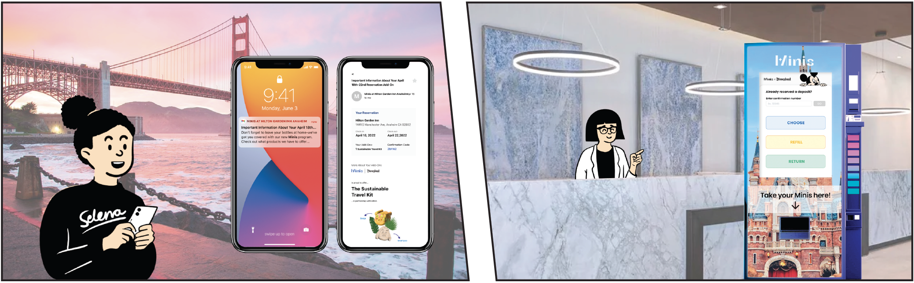
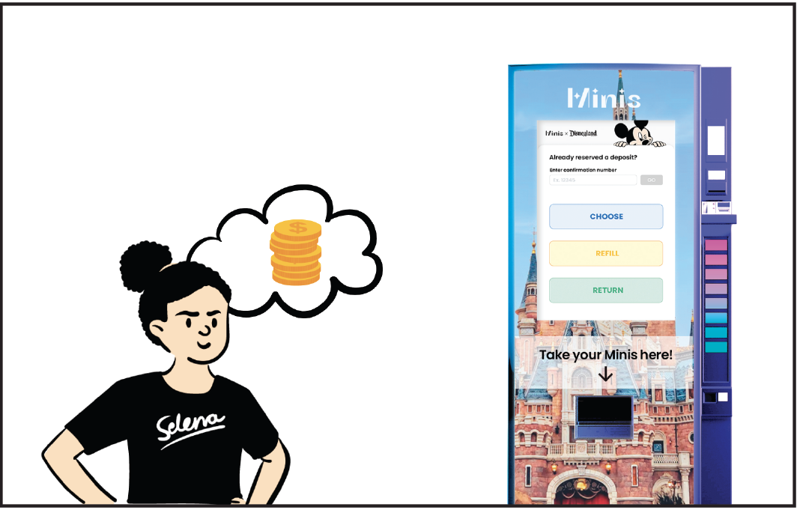

Minis
Overview
Spring 2022 | 4 Months | Sustainability
Minis is a packaging solution program in partnership with DisneyParks hotels in terms of sustainable packaging as the solution to single-use waste. It sources sustainable materials such as kelp, bamboo, coconut, corn, etc, and turns this into unique travel-size packaging solutions which are made into sustainable travel kit systems for the hotel industry. These products also have 2nd life as souvenirs to extend the lifecycle and last infinitely.
In terms of sustainability, the objective of this program is to promote collective actions instead of individual actions through systematic change rather than individual ines. So, Minis aims to minimize the throwaway culture with future visibility of sustainable packaging alternatives in a way that feels convenient, valuable, and approachable to incentivize and subconsciously influence customers’ behavior.
01. Problem
Recycling
Since recycling system sucks, Minis will focus on reducing waste in the beginning of product lifecycle to ease the worries on recycling
üè¢ Hotel Waste

There are 196 hotel chains in just the U.S. alone.
Just imagine how large the amounts of waste!
02. Mindmap
03. Research
I. Alternative sustainable packaging materials
II. Interviews with solution space partners and surveys for hotel patrons

04. Findings
CONSTRAINT#1: The durability of sustainable materials
CONSTRAINT#2: The established semiotics of products

05. Solutions
#1: for the durability of materials

#2: for the semiotics of products

06. Why Disney?
Theoretically, this system could be implemented at any hotel that currently uses single-use self-care products in plastic packaging. In an attempt to elicit the most impact, focus places will be hotels with high visitor volumes and trusted brand image, such as Disneyland Resorts.
07. Low-fi System Prototype
08. Style Tile

09. Interface Wireframes

09. How it works?
Experience prototype
Selena is a self-proclaimed “disney adult” and get to take to Disneyland each year.
For the holiday season, Selena decides to book a Disneyland trip for herself.

While booking a hotel, she sees information regarding a “sustainable travel kit” program. She clicks to get more information and sees adorable,interesting packaging plus a simple way to not use so much travel-size plastic-it’s a win win.
To know more about the program, she clicks LEARN MORE and navigates to the MINIS website to see the fun packaging and innovative materials being used and how her opt-in will make an environmentally-friendly impact.
All this for just a $4 refundable deposit. She opts in.
Before her trip, Selena receives a reminder email about her minis opt-in. She’s reminded that she doesn’t have to worry about bringing her travel size items-all her essentials will be available when she arrives.
Selena arrives in Anaheim, california for their Disney vacation. After checking in at the front desk of their hotel, the hotel agent directs them towards the MINIS vending machine.
Selena enters the confirmation number and customizes the materials, products, quantities and receives her MINIS travel kit items.
Choose on Vending Machine

Once Selena has made their selection, she receives their MINIS to use for her hotel stay.

Over the course of the week, Selena has a great time enjoying the park.
If she runs low on her MINIS products, she can refill them on Vending Machine without additional cost.

Refill on Vending Machine
At the end of the stay, Selena has TWO choices:
Option#1: Keep MINIS as sonveniors.
Option #2: Return for a full refund.
For this trip, Selena chooses to return her MINIS.

While returning, she is given the option to learn more about sustainable packaging materials and donate some or all of her deposit towards funding and research to make these materials more widely available in the near future.
Return on Vending Machine
Selena chooses to donate and receives a digital token that she can post to social media. She shares with her friends and family and they are able to learn more about these sustainable materials too.